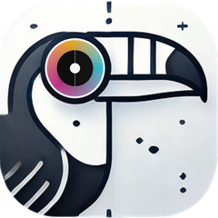
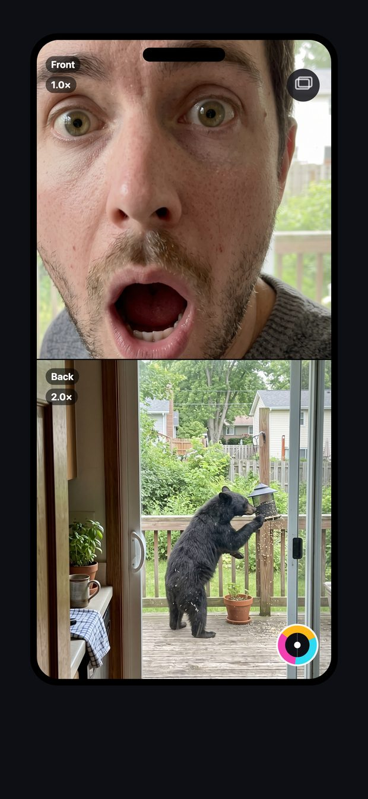

Your reaction and what you're watching — captured together in one video. Built for game reactions, vlogs, and dual-angle moments.
Join the free beta →
A real TouCam capture — your reaction and the moment, together.
Most cameras make you choose: film yourself, or film the moment. TouCam does both at once — front and back, recording together.
Front and back cameras capture simultaneously to a single, shareable video.
Wide fisheye, screen-light flash, warm/cool tints, and lens blur — baked right into your recording.
Export as split-screen, side-by-side, or picture-in-picture — you choose which camera is big.
Grab a photo of both cameras at once without stopping your video.
Prop up your phone and raise a hand — TouCam counts down and starts rolling.
Rotate for a side-by-side view, perfect for watching the big screen with a friend.
TouCam is in open beta through Apple's TestFlight (it's not on the App Store yet). Here's the one-minute setup:
Tap “Join the free beta” on your iPhone.
Install “TestFlight” if asked — it's Apple's free app for trying betas. The link takes you there.
Tap “Install” on TouCam in TestFlight — it lands on your home screen like any app.
Open it and hit record. Point it at your face and the moment. Long-press the record button for effects.